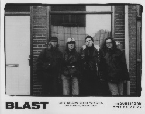

Home Artist links Label link

Blast - Stringy Rugs
| Artist: | Blast |
| Title: | Stringy Rugs |
| Label: | Cuneiform Rune 95 |
| Length(s): | 58 minutes |
| Year(s) of release: | 1997 |
| Month of review: | 06/1997 |
Line up
Edward Capel - sax, clarinet
Dirk Bruinsma - sax, e-bass, vocals
Frank Crijns - guitars
David Kerman - drums, percussion
Tracks
| 1) | E Se Di Questo Vol Dicere Piue | 5.28
|
| 2) | Limbaire | 5.44
|
| 3) | Outgrowth | 6.43
|
| 4) | Litho 1 | 1.25
|
| 5) | Communifade | 6.41
|
| 6) | Bouncing | 8.42
|
| 7) | Ink | 8.26
|
| 8) | Litho 2 | 1.08
|
| 9) | O.A.L.I. | 6.28
|
| 10) | Tectonic Afterbirth | 6.44
|
All sound samples from Stringy Rugs appear here by permission of Cuneiform Records.
Summary
A Dutch band on an American label. I got this CD to review for iO Pages.
They have a CD out with the very nice title: Puristsirup.
This is their third album. Funny thing is that although the band has
quite a past already as shown by the accompanying bio, I had never
heard on them. Shame on me?
The coming review is a rough translation of the Dutch review for
iO Pages (although in that review I laced it with info on the band
that is here noted above).
The music
The complex music of this band is dominated by percussion, the horns and
the saxes. Although there is some bass and guitar work, there is not that
much, although they have an important function: to give power and force
to the music. The wind-instruments are used for playing quircky
tunes and scales and give the music its neurotic character.
Fortunately, the men from Blast have done their best to make this
a sensible release and in my opinion this is because of the power
that comes from the music and in a sense the music of this band can
be compared to the improvised THRaKaTTaK of King Crimson.
Also, even in the more neurotic parts the music of Blast can be
quite appealing and drags the listener along untrodden paths.
The bad thing (but also one of its merits) about complex music is that
at first it sounds only chaotic (which is usually not the way the
artists have meant it, okay, Metal Machine Music is not a good example),
so this album needs to ripen and in fact has to be played a few times to
reveal the very least of its secrets. So, I prefer you not give up on
this album too easily.
Conclusion
See above.
© Jurriaan Hage